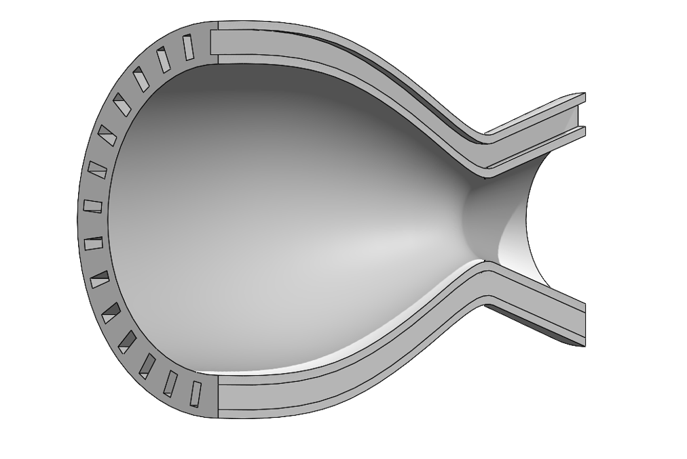
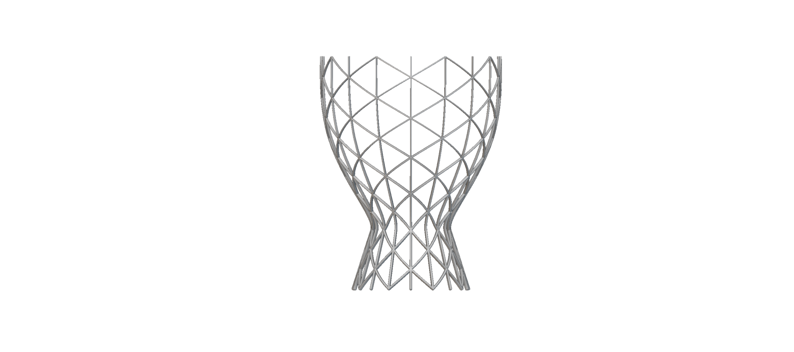
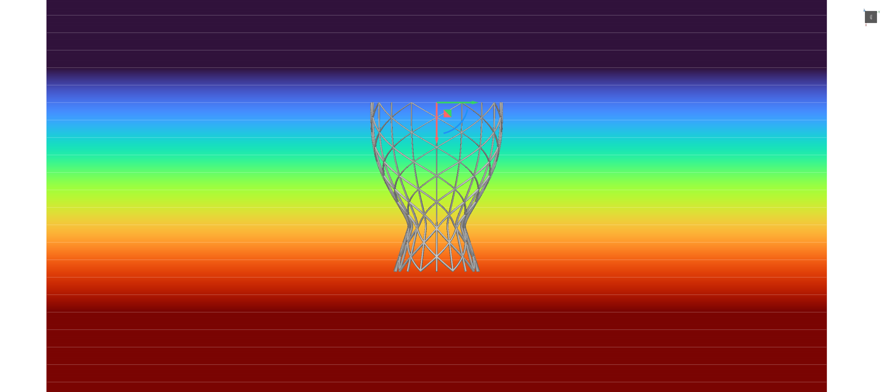
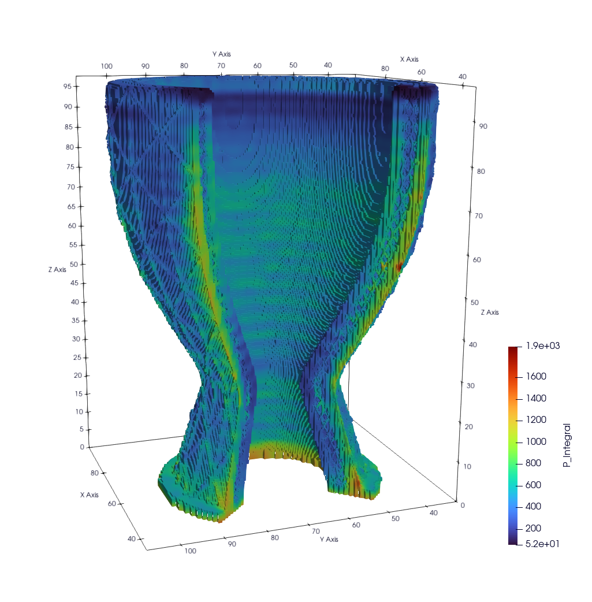
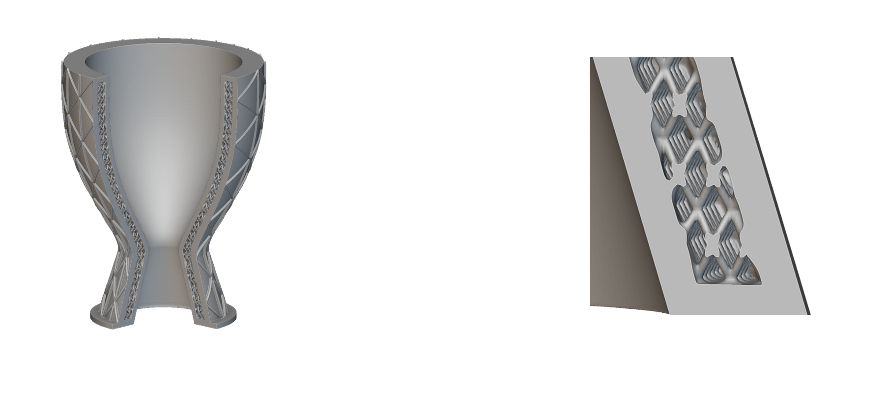
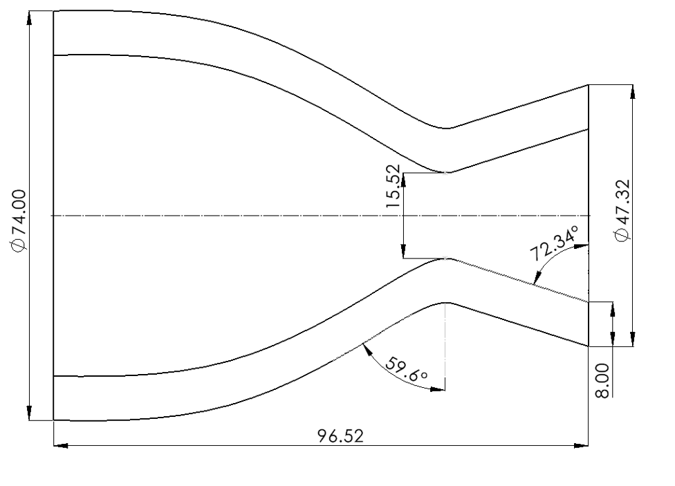

Rocket propulsion • additive manufacturing
Additively Manufactured Regeneratively Cooled Rocket Nozzle
This project explored lattice structures in a regeneratively cooled rocket nozzle manufactured with metal additive manufacturing.

Basic facts
Core design and manufacturing details.
Design development
From rectangular cooling channels to a BCC lattice cooling core.


The report shows that BCC lattices improve heat transfer and distribute load more evenly, which helps reduce damage to the inner wall. That makes the lattice approach a strong additive option, even with the pressure-drop tradeoff.
2. Isogrid reinforcement
Parametric field equations vary the isogrid thickness along the nozzle axis.
The field-view image shows how the outer isogrid changes thickness by location. I used field-driven equations so the rib thickness could respond to pressure along the axis of the nozzle instead of staying uniform everywhere.
That variation helps the shell manage hoop stress more efficiently by thickening reinforcement where the loading is higher and relaxing it where the load is lower.


3. Build process simulation
The simulation checks printability before the nozzle is built.
This is a build-process simulation, not a service-load FEA. In LPBF, geometry, overhangs, thermal effects, residual stress, and distortion can all create print failure risk. The P integral helps assess that risk by relating the local von Mises stress field to the surrounding area and volume, making it easier to spot regions that may warp, crack, separate from the build plate, or fail during the build.
For this nozzle, the results looked acceptable and supported moving the design forward to manufacturing.
As printed
Back view of the printed nozzle prototype.

Reference geometry
Dimensioned profile used to anchor the CAD model.


Materials and process
Built as a single integrated Ti-6Al-4V part.
Ti-6Al-4V was selected because it is commonly used in aerospace applications and offers a strong strength-to-weight balance, corrosion resistance, and useful high-temperature performance.
Additive manufacturing made it possible to produce the internal lattice cooling geometry and the external variable isogrid as one part, which would be extremely difficult to machine conventionally.
Takeaway
What this project demonstrates.
nTop / nTopology, metal additive manufacturing, design for additive manufacturing, regenerative cooling, lattice structures, isogrid structures, parametric modeling, propulsion hardware design, mesh sensitivity studies, printability analysis, and simulation-driven iteration.
The project combines aerodynamic and thermal thinking with lightweight structural design and practical manufacturing constraints into one cohesive nozzle story.